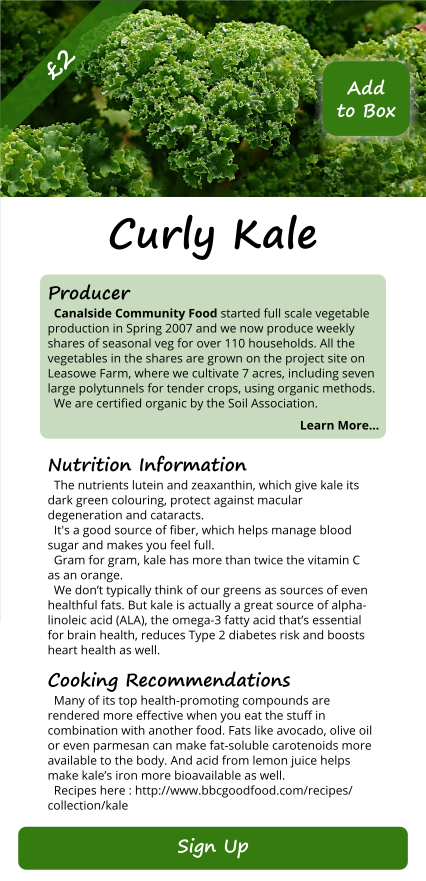

VegBox Visual Design

I decided to build an iPad screen, because I did the whole flow for a small phone screen, to show how it could scale. This would also work for a small browser window, or it could be made into two columns for landscape tablets and larger browser windows.